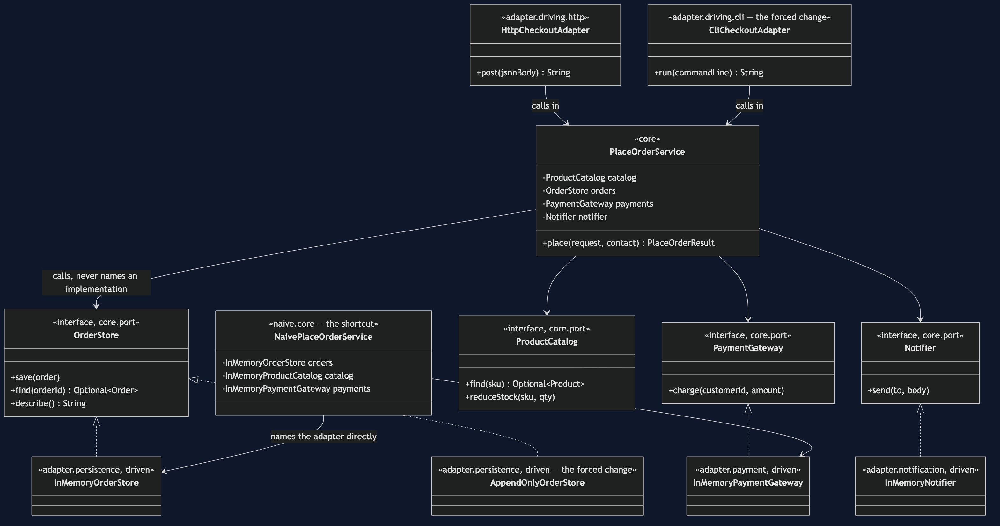
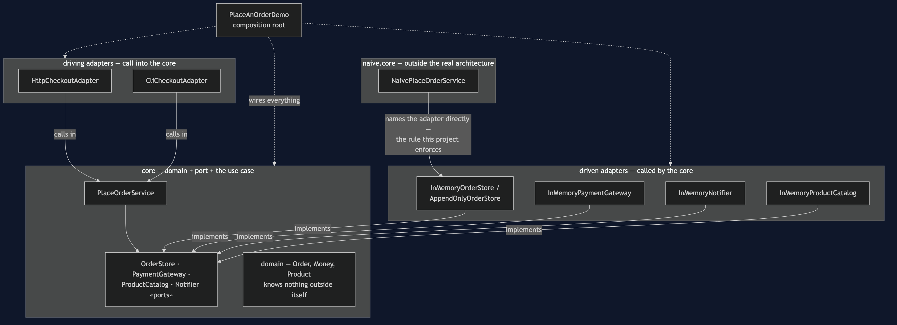
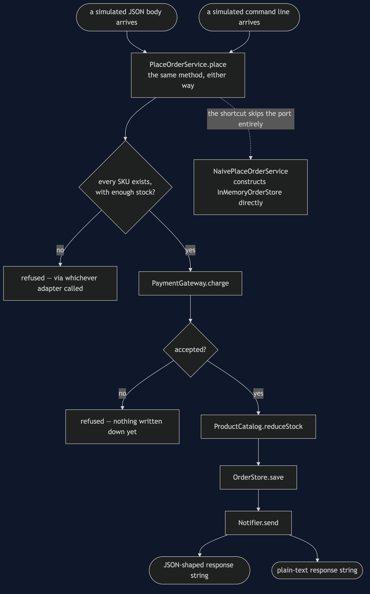
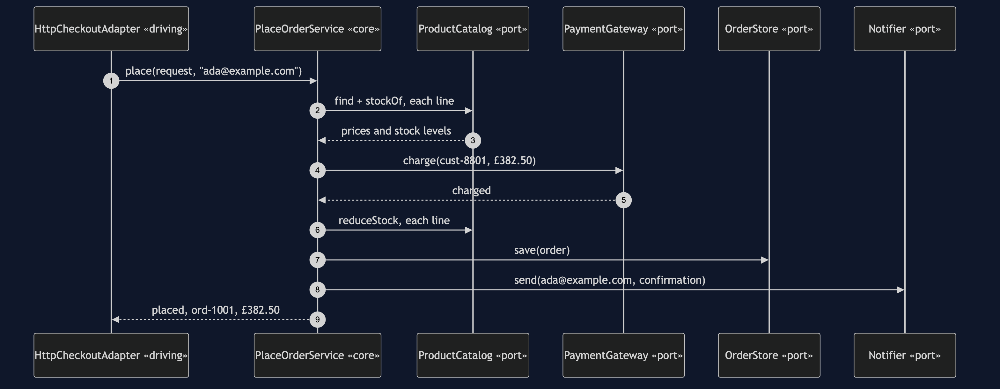
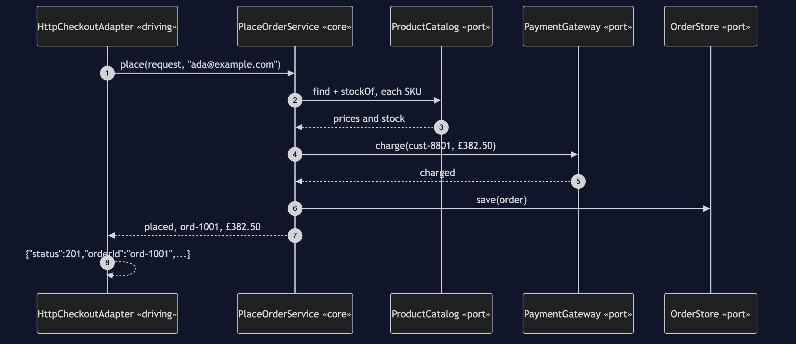
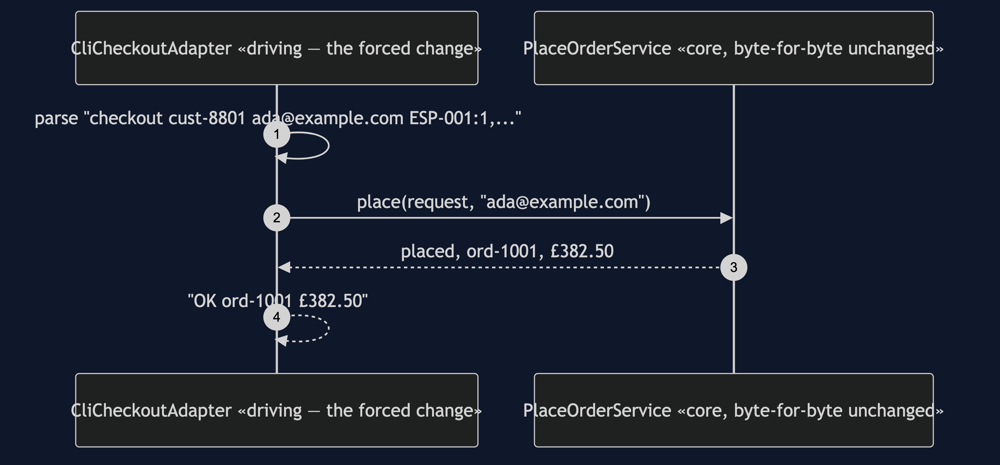
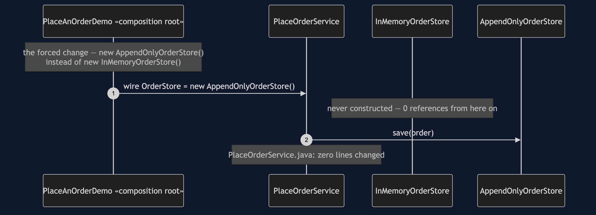
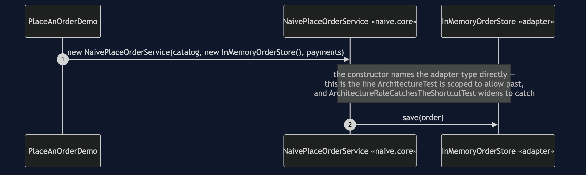

Hexagonal Architecture Pattern
src/main/java/com/jk/explore/hexagonal/
├── PlaceAnOrderDemo.java composition root — the five acts
├── ForcedChange.java counts the bill, from real files on disk
│
├── core/ ← depends on nothing outside itself
│ ├── PlaceOrderService.java the use case — imports only domain + port
│ ├── PlaceOrderRequest.java · PlaceOrderResult.java
│ ├── domain/ Order, OrderLine, Money, Product...
│ └── port/ ← interfaces, declared BY the core
│ ├── OrderStore.java · ProductCatalog.java
│ └── PaymentGateway.java · Notifier.java
│
├── adapter/ ← reaches UP to the core, never the reverse
│ ├── persistence/
│ │ ├── InMemoryOrderStore.java
│ │ ├── AppendOnlyOrderStore.java the driven-side forced change
│ │ └── InMemoryProductCatalog.java
│ ├── payment/InMemoryPaymentGateway.java
│ ├── notification/InMemoryNotifier.java
│ └── driving/
│ ├── http/HttpCheckoutAdapter.java
│ └── cli/CliCheckoutAdapter.java the driving-side forced change
│
└── naive/core/ ← kept on purpose, outside the real core
└── NaivePlaceOrderService.java the shortcut — names adapters directlysrc/test/java/.../hexagonal/ArchitectureTest.java is what checks the one rule that matters: no class in core may depend on any class in adapter, in either direction.
The core defines ports — interfaces, in its own language, for whatever it needs from the outside world. Adapters, outside the core, implement those ports or call through them, so every dependency between the core and the world points inward.
This is project 65 of architectural-design-patterns, one step from Layered Architecture: the same feature, with the one thing that project's own documents admitted it had not fixed — the use case naming its storage by import — inverted here.
Run
./gradlew runFive acts.
TWO. The real core, driven by HTTP.
{"status":201,"orderId":"ord-1001","total":"£382.50"}
the core has two imports: core.domain and core.port.
it does not know HTTP, or any adapter, exists.
FOUR. The driving side swapped — a CLI calls in.
$ OK ord-1001 £382.50
the same PlaceOrderService instance shape, called from
a shape as different from HTTP as this project has.FIVE. The rule, and the bill.
...
FORCED CHANGE: swap storage, AND swap who calls in
a map -> an append-only log (driven side)
HTTP -> a command line (driving side)
files added : 2 adapter/persistence/AppendOnlyOrderStore.java, adapter/driving/cli/CliCheckoutAdapter.java
files modified : 1 PlaceAnOrderDemo.java (the composition root)
lines changed : 4
classes in the core : 14
of those, opened : 0
of those, never opened : 14
AND THE ONE THAT TOOK THE SHORTCUT
naive/core/NaivePlaceOrderService.java imports InMemoryOrderStore,
InMemoryProductCatalog and InMemoryPaymentGateway directly
swap any one of them, and this class has to be edited tooAnd the acceptance line every project in this category prints identically:
ACCEPTANCE
order ord-1001 for cust-8801: PLACED, 3 lines, £382.50
stock ESP-001 3, GRD-014 1, BNS-220 38
charged cust-8801 £382.50 once
sent 1 confirmation to ada@example.com
refused: not enough stock, unknown product, payment declinedTest
./gradlew testSeventeen tests. Two assert the dependency rule on the real core; one widens it to naive.core and asserts the failure names NaivePlaceOrderService. BothSidesAgreeTest is the one worth reading first — it proves, not merely narrates, both halves of this project's claim: the same core answers identically whether called through HttpCheckoutAdapter or CliCheckoutAdapter, and produces the same order whether saved through InMemoryOrderStore or AppendOnlyOrderStore.
Technologies and versions
| What | Version | Why it is here |
|---|---|---|
| Java | 21 | The repository standard |
| Gradle | 9.2.1 | The wrapper in this directory |
| JUnit 5 | 5.10.2 | Test runner |
| ArchUnit | 1.5.0 | Test-only. The core/adapter rule is written and enforced with it |
No Spring, no real HTTP, no real database. Every adapter in this project is in-memory.
Learning Material
| Document | What it covers |
|---|---|
docs/problem-statement.md | The naive service, and what it costs |
docs/hexagonal-architecture-pattern-explained.md | Ports, adapters, the one-move difference from Layered, the forced change, the bill |
docs/class-diagram.md | The types, and which arrows point inward |
docs/architecture-diagram.md | What is allowed to know about what |
docs/data-flow-diagram.md | One order, entering through either driving adapter |
docs/sequence-diagram.md | Who calls whom — written for a listener with the screen off |
docs/uml-diagram.md | Four sequences: HTTP, CLI, the storage swap, the shortcut |
docs/animation.html | Five steps in a browser |
docs/prerequisites.md | What you need to know, and what you explicitly do not |
docs/session.md | A one-hour taught session with three exercises |
docs/spec.md | The generated specification |
docs/youtube.md | Title, description and chapters |
The pattern in one picture
Every arrow out of PlaceOrderService lands on a port. NaivePlaceOrderService alone has an arrow to a concrete adapter.

What is allowed to know about what
Every arrow crossing into the core box points inward — driven adapters implement a port, driving adapters call the use case.

How one order enters from either side
Two entry points, one shared path, formatted differently only at the very last step.

Who calls whom, in order
The sequence written to work with the screen off: every name the core calls out is a name the core itself gave.

All four sequences
The full set from docs/uml-diagram.md.
One. The core, driven by a simulated HTTP request.

Two. The same core, driven by a simulated command line instead.

Three. The driven side swapped — storage changes, the core does not.

Four. The shortcut — the core's own use case names an adapter.

Video
Built from video/scenes.py by video/build_video.sh. The rendered file is not committed.
When this is too much
Worth it when a core genuinely needs to be called from more than one place, persisted in more than one way, or tested without any real infrastructure existing yet. Not worth it for an application that will only ever have one database and one caller — four interfaces that will never have a second implementation are indirection with nothing behind them but the diagram.
Where this sits
Project 65 of architectural-design-patterns, one step from Layered Architecture. The next project, Clean Architecture, generalises exactly this inversion — concentric layers instead of one core-versus-adapters boundary, with the dependency rule stated once: source code dependencies point only inward.
Also available with a framework
Hexagonal Architecture with Spring Boot Pattern reruns this idea on a real framework, and shows what the framework adds and where it can undo the pattern. Watch this project first.